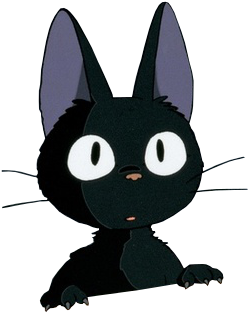

After dancing, Whiskers lay down on a patch of grass, watching the fireflies flicker around him. He felt happy and peaceful, knowing he had shared a magical moment with his glowing friends. Whiskers closed his eyes and listened to the soothing sounds of the night.

The End